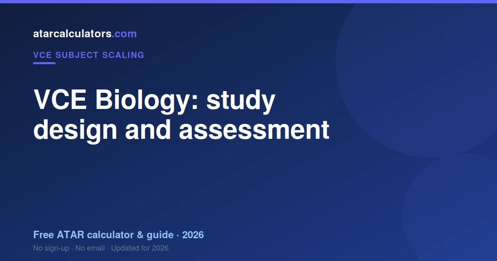
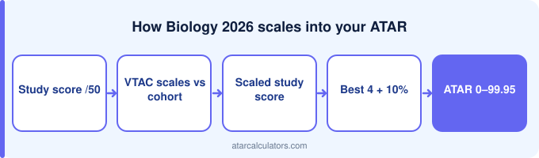

VCE Biology (Units 3 and 4) covers how organisms regulate their functions, how inheritance impacts diversity, and how organisms respond to challenges, along with a student-designed investigation. Your study score combines your School-Assessed Coursework (SACs) with the end-of-year exam. After that, VTAC scales your score for your ATAR. Always confirm the current areas of study and assessment with VCAA, since study designs are updated periodically.
Key takeaways
- Biology is a Units 3 and 4 science subject.
- It covers regulation, inheritance and response to change.
- Your score combines SACs and the exam.
- It includes a student-designed investigation.
- Confirm the areas of study with VCAA.
- Then scaled by VTAC for your ATAR.

Course overview
VCE Biology is a science subject. The scored part is Units 3 and 4, studied in Year 12. It develops your understanding of living systems, from molecular and cellular biology to genetics, evolution and immunity.
So Units 3 and 4 are where your study score is earned. The structure below is a guide. Always confirm the current design with VCAA, since details change.
Areas of study
The Units 3 and 4 course covers how organisms regulate their functions, how inheritance impacts diversity, and how organisms respond to challenges over time, along with a student-designed scientific investigation. Use the current VCAA study design for the exact areas of study.
Each area of study has its own key knowledge and key skills in the study design. These define what you can be assessed on. So use the current VCAA study design as your definitive guide.
How it is assessed
Your Biology study score combines SACs across Units 3 and 4 with the end-of-year exam. Biology carries the heaviest content load of the sciences, and both components test it.
SACs explained
Biology SACs include practical and depth-study work. They reward sustained effort rather than recall, and they are half your study score.
The exam
The Biology exam is written throughout, and it is marked on terminology. A true sentence that avoids the technical term earns nothing.
Confirm details with VCAA
Study designs, areas of study and assessment can change between years. So treat this guide as an overview, not the final word. The authoritative source is always the current VCAA study design.
So before you rely on any specific detail, check it against VCAA’s current documents for Biology. This makes sure you study the right content and prepare for the right exam.
Preparing for VCE Biology
Preparing for Biology means learning the vocabulary as precisely as the concepts, and drawing processes from memory rather than rereading them.
Scaling and your ATAR
VTAC scales Biology around the middle, because its cohort is large and broad. That is a statement about who enrols, not about the content volume.
See how it scales
To see how a Biology score scales, use our VCE Biology scaling calculator. It gives an indication of how a raw score converts, so you can see how the subject fits your ATAR.
Treat the result as indicative, since scaling changes each year, and confirm all course detail with VCAA.
Units 1 and 2 first
Before the scored Units 3 and 4, most students take Units 1 and 2 of Biology in Year 11. These are not scored for your ATAR, but they build the foundation for Units 3 and 4.
So do not treat Units 1 and 2 as unimportant. A solid grasp of them makes Units 3 and 4 far more manageable, and gaps there can make Year 12 harder than it needs to be.
Skills the course builds
Biology builds precise scientific language across an unusually wide body of content. The breadth is the challenge; the precision is the mark.
How SACs are weighted
Your SACs across Units 3 and 4 each carry a set weighting toward your study score, within VCAA’s rules. Together they form part of your score, alongside the exam. Your school sets the tasks; VCAA moderates the marks.
So each SAC counts, and moderation keeps them fair across schools. Knowing your SAC schedule helps you plan your effort across the year.
Preparing for the exam
Work past exams with the reports. Biology reports are almost entirely about which words earned the mark and which near-synonyms did not.
From study design to ATAR
Once your Biology score is set, VTAC scales it and it joins your aggregate — in full if Biology is in your Primary Four.
How Units 3 and 4 fit together
Units 3 and 4 of Biology run across Year 12 and together produce your study score. Unit 3 comes first, then Unit 4, each with its own SACs. The end-of-year exam covers both.
So plan for the whole year, not one unit at a time. Keeping up through Unit 3 makes Unit 4 and the exam far more manageable.
Keep checking VCAA
Study designs are reviewed and updated on a cycle, so details can change between years. The safest habit is to check VCAA’s current Biology study design and exam materials directly.
So treat any guide, including this one, as an overview. For the exact areas of study, assessment and weightings, VCAA is always the authority.
Common questions
What is in the VCE Biology study design?
VCE Biology (Units 3 and 4) covers how organisms regulate their functions, how inheritance impacts diversity, and how organisms respond to challenges over time. Each area of study has its own key knowledge and skills that define what can be assessed. Always confirm the current content with VCAA, since study designs are updated periodically.
What areas of study does VCE Biology cover?
VCE Biology Units 3 and 4 cover areas including how organisms regulate their functions, how inheritance impacts diversity, and how organisms respond to challenges, plus a student-designed investigation. Confirm the current areas of study with VCAA, since study designs are updated periodically.
How is VCE Biology assessed?
Your VCE Biology study score combines your School-Assessed Coursework (SACs), done during the year and moderated against the exam, with your end-of-year exam. Together these produce your study score out of 50.
What is the VCE Biology exam and SAC structure?
The VCE Biology exam is a single end-of-year written exam with multiple-choice and short-answer questions and some extended responses. Your SACs are school-set tasks across Units 3 and 4, moderated by VCAA. The exact format and weightings are set by VCAA, so confirm them from the current study design and past exams.